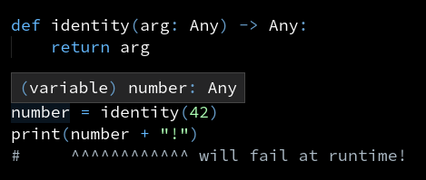
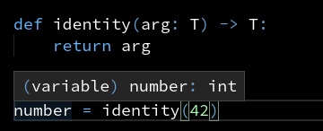
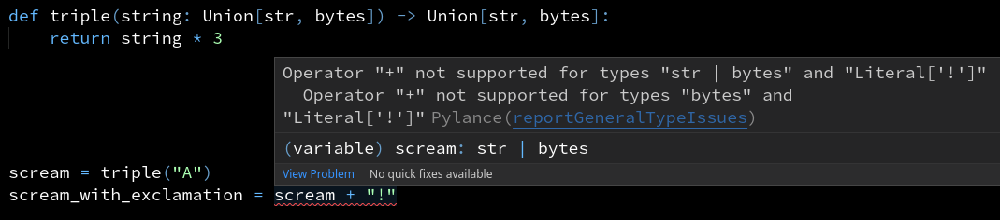
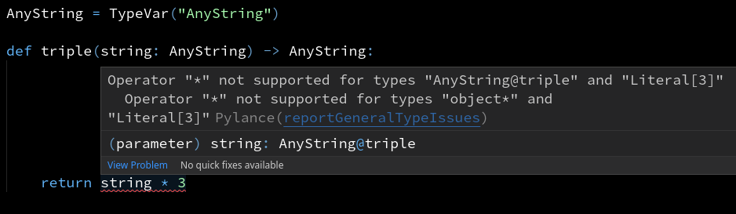

Type variables
This is a short introduction to type variables, or TypeVars.
The problem
This function accepts anything as the argument and returns it as is.
How do you explain to the type checker that the return type is the same as the type of arg?
def identity(arg):
return arg
Why not use Any?
def identity(arg: Any) -> Any:
return arg
If you use Any, the type checker will not understand how this function works:
as far as it's concerned, the function can return anything at all.
The return type doesn't depend on the type of arg.
We'd really want number to be an int here, so that the type checker will catch an error on the next line:

Why not specialize the function for different types?
def identity_int(arg: int) -> int:
return arg
def identity_int(arg: str) -> str:
return arg
def identity_list_str(arg: list[str]) -> list[str]:
return arg
...
-
This doesn't scale well. Are you going to replicate the same function 10 times? Will you remember to keep them in sync?
-
What if this is a library function? You won't be able to predict all the ways people will use this function.
The solution: type variables
Type variables allow you to link several types together. This is how you can use a type variable to annotate the identity function:
from typing import TypeVar
T = TypeVar("T")
def identity(arg: T) -> T:
return arg
Here the return type is "linked" to the parameter type: whatever you put into the function, the same thing comes out.
This is how it looks in action:

Putting constraints on a type variable
Is this a well-typed function?
def triple(string: Union[str, bytes]) -> Union[str, bytes]:
return string * 3
If you pass in a string, you always get a string, same with bytes.
But the type doesn't say quite that: whether you pass in a str or a bytes object, you will
get Union[str, bytes] back.

"If you pass in str, you get str. If you pass in bytes, you get bytes"
— sounds like a job for a type variable. Right?

The error is fair enough. AnyString doesn't have to be a string or a bytestring, it could be a list or a pathlib.Path or even a function. Therefore we're not allowed to multiply string.
We can put a restriction on our type variable: it should only accept str or bytes.
AnyString = TypeVar("AnyString", str, bytes)
def triple(string: AnyString) -> AnyString:
return string * 3
unicode_scream = triple("A") + "!"
bytes_scream = triple(b"A") + b"!"
Here we've achieved two goals:
- ensuring that the input is either a
stror abytesobject - linking the argument type to the return type
Using type variables as parameters
You can also use type variables as parameters to generic types, like list or Iterable.
from collections.abc import Iterable, Iterator
def remove_falsey_from_list(items: list[T]) -> list[T]:
return [item for item in items if item]
def remove_falsey(items: Iterable[T]) -> Iterator[T]:
for item in items:
if item:
yield item
However, this gets tricky pretty fast. We'll cover it in depth in a different article.
Links
mypydocumentation on generic functions: mypy documentation